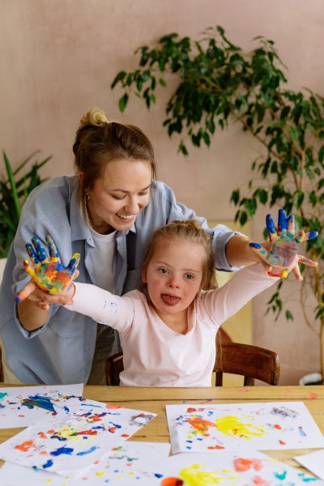

Nuestra Misión
Nuestra misión es brindar atención integral y personalizada a los pacientes y sus familias. Esto incluye evaluaciones y diagnósticos precisos, terapias y programas de tratamiento diseñados para mejorar las habilidades cognitivas, motoras y sociales de los pacientes, y apoyo y orientación para las familias. El equipo está formado por profesionales de diferentes disciplinas como psicología, neurolingüística, psicopedagogía y terapia ocupacional, que trabajan juntos para brindar un enfoque interdisciplinario y colaborativo para el cuidado del paciente.